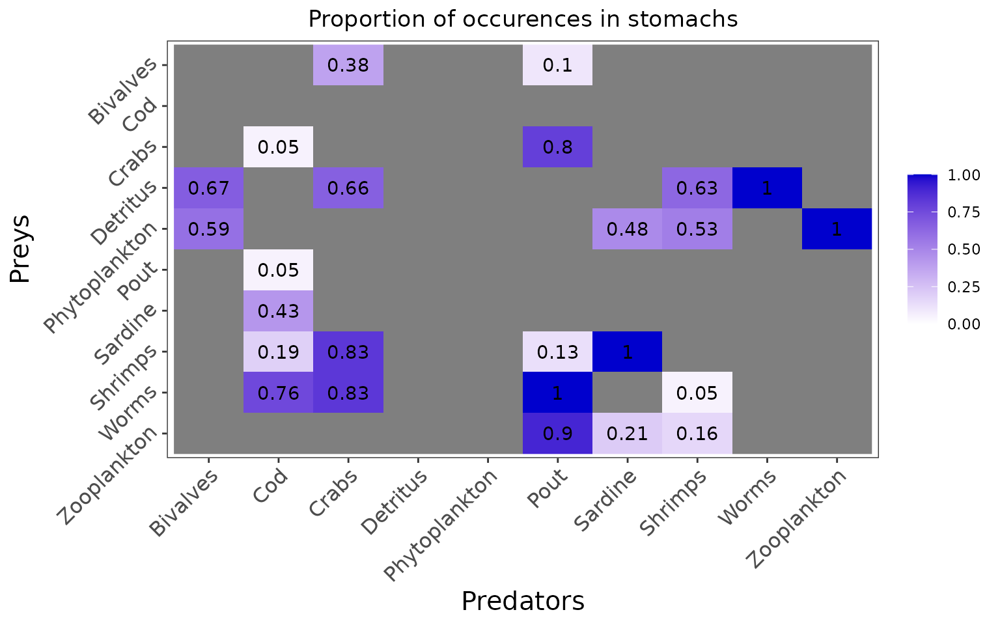
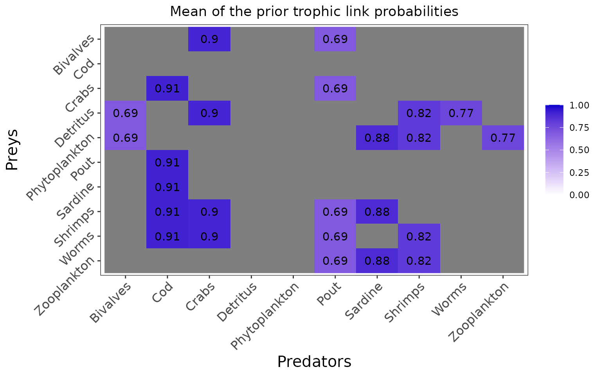

2. EcoDiet explored on a realistic example
Heloise Thero, Pierre-Yves Hernvann
2024-07-10
Source:vignettes/realistic_example.Rmd
realistic_example.RmdThe introduction employed a simplistic example of food web to familiarize the user with the basic commands and options of the EcoDiet package. Here we will use a more realistic example (although still artificial!) to run the different EcoDiet configurations, compare their results and hence highlight the complementarity in the different data used.
The data corresponds to 10 trophic groups with stomach content data, and very distinct isotopic measures.
realistic_stomach_data_path <- system.file("extdata", "realistic_stomach_data.csv",
package = "EcoDiet")
realistic_stomach_data <- read.csv(realistic_stomach_data_path)
knitr::kable(realistic_stomach_data)| X | Cod | Pout | Sardine | Shrimps | Crabs | Bivalves | Worms | Zooplankton | Phytoplankton | Detritus |
|---|---|---|---|---|---|---|---|---|---|---|
| Cod | 0 | 0 | 0 | 0 | 0 | 0 | 0 | 0 | 0 | 0 |
| Pout | 1 | 0 | 0 | 0 | 0 | 0 | 0 | 0 | 0 | 0 |
| Sardine | 9 | 0 | 0 | 0 | 0 | 0 | 0 | 0 | 0 | 0 |
| Shrimps | 4 | 4 | 29 | 0 | 24 | 0 | 0 | 0 | 0 | 0 |
| Crabs | 1 | 24 | 0 | 0 | 0 | 0 | 0 | 0 | 0 | 0 |
| Bivalves | 0 | 3 | 0 | 0 | 11 | 0 | 0 | 0 | 0 | 0 |
| Worms | 16 | 30 | 0 | 1 | 24 | 0 | 0 | 0 | 0 | 0 |
| Zooplankton | 0 | 27 | 6 | 3 | 0 | 0 | 0 | 0 | 0 | 0 |
| Phytoplankton | 0 | 0 | 14 | 10 | 0 | 16 | 0 | 20 | 0 | 0 |
| Detritus | 0 | 0 | 0 | 12 | 19 | 18 | 18 | 0 | 0 | 0 |
| full | 21 | 30 | 29 | 19 | 29 | 27 | 18 | 20 | 0 | 0 |
realistic_biotracer_data_path <- system.file("extdata", "realistic_biotracer_data.csv",
package = "EcoDiet")
realistic_biotracer_data <- read.csv(realistic_biotracer_data_path)
knitr::kable(realistic_biotracer_data[c(1:3, 31:33, 61:63), ])| group | d13C | d15N | |
|---|---|---|---|
| 1 | Cod | -12.94144 | 19.18913 |
| 2 | Cod | -14.96070 | 20.23939 |
| 3 | Cod | -13.77822 | 19.48809 |
| 31 | Pout | -13.47127 | 18.57353 |
| 32 | Pout | -13.16888 | 17.58714 |
| 33 | Pout | -14.23085 | 17.38938 |
| 61 | Sardine | -14.56111 | 16.95231 |
| 62 | Sardine | -15.04729 | 17.15197 |
| 63 | Sardine | -14.63688 | 16.90906 |
library(EcoDiet)
plot_data(biotracer_data = realistic_biotracer_data,
stomach_data = realistic_stomach_data)
#> Warning: Use of `biotracer_data$group` is discouraged.
#> ℹ Use `group` instead.Yes, we are aware that isotopic data is usually messier, but isn’t it a beautiful plot?
The configuration without literature data
We define the configuration we are in, and preprocess the data:
literature_configuration <- FALSE
data <- preprocess_data(biotracer_data = realistic_biotracer_data,
trophic_discrimination_factor = c(0.8, 3.4),
literature_configuration = literature_configuration,
stomach_data = realistic_stomach_data)
#> The model will investigate the following trophic links:
#> Bivalves Cod Crabs Detritus Phytoplankton Pout Sardine Shrimps
#> Bivalves 0 0 1 0 0 1 0 0
#> Cod 0 0 0 0 0 0 0 0
#> Crabs 0 1 0 0 0 1 0 0
#> Detritus 1 0 1 0 0 0 0 1
#> Phytoplankton 1 0 0 0 0 0 1 1
#> Pout 0 1 0 0 0 0 0 0
#> Sardine 0 1 0 0 0 0 0 0
#> Shrimps 0 1 1 0 0 1 1 0
#> Worms 0 1 1 0 0 1 0 1
#> Zooplankton 0 0 0 0 0 1 1 1
#> Worms Zooplankton
#> Bivalves 0 0
#> Cod 0 0
#> Crabs 0 0
#> Detritus 1 0
#> Phytoplankton 0 1
#> Pout 0 0
#> Sardine 0 0
#> Shrimps 0 0
#> Worms 0 0
#> Zooplankton 0 0In this configuration, priors are set for each trophic link identified as plausible by the user but the priors are not informed by literature data, and are thus uninformative:
plot_prior(data, literature_configuration)The marginal prior distributions have different shape depending on the variables:
it is flat or uniform for \(\eta\), the probabilities that a trophic link exists (all the probabilities of existence are thus equiprobable),
the marginal distributions for each diet proportion \(\Pi\) are peaking at zero, although the joint distribution for \(\Pi\)s is a flat Dirichlet prior, because all the diet proportions must sum to one.
plot_prior(data, literature_configuration, pred = "Pout")We define the model, and test if it compiles well with a few iterations and adaptation steps:
filename <- "mymodel.txt"
write_model(file.name = filename, literature_configuration = literature_configuration, print.model = F)
mcmc_output <- run_model(filename, data, run_param="test")
#>
#> Processing function input.......
#>
#> Done.
#>
#> Compiling model graph
#> Resolving undeclared variables
#> Allocating nodes
#> Graph information:
#> Observed stochastic nodes: 316
#> Unobserved stochastic nodes: 125
#> Total graph size: 1104
#>
#> Initializing model
#>
#> Adaptive phase, 500 iterations x 3 chains
#> If no progress bar appears JAGS has decided not to adapt
#>
#>
#> Burn-in phase, 500 iterations x 3 chains
#>
#>
#> Sampling from joint posterior, 500 iterations x 3 chains
#>
#>
#> Calculating statistics.......
#>
#> Done.
#>
#> /!\ Convergence warning:
#> Out of the 51 variables, 14 variables have a Gelman-Rubin statistic > 1.1.
#> You may consider modifying the model run settings.
#> The variables with the poorest convergence are: PI[4,3], PI[10,8], PI[10,7], PI[8,6], PI[8,2], PI[6,2], PI[7,2], PI[9,8], PI[9,3], PI[8,7].
#> JAGS output for model 'mymodel.txt', generated by jagsUI.
#> Estimates based on 3 chains of 1000 iterations,
#> adaptation = 500 iterations (sufficient),
#> burn-in = 500 iterations and thin rate = 1,
#> yielding 1500 total samples from the joint posterior.
#> MCMC ran for 0.235 minutes at time 2024-07-10 10:08:16.119673.
#>
#> mean sd 2.5% 50% 97.5% overlap0 f Rhat n.eff
#> eta[4,1] 0.648 0.084 0.481 0.648 0.800 FALSE 1 1.002 649
#> eta[5,1] 0.592 0.086 0.419 0.593 0.756 FALSE 1 1.001 1500
#> eta[3,2] 0.091 0.059 0.012 0.080 0.233 FALSE 1 1.000 1500
#> eta[6,2] 0.088 0.059 0.012 0.076 0.240 FALSE 1 1.011 200
#> eta[7,2] 0.425 0.101 0.233 0.425 0.624 FALSE 1 1.002 877
#> eta[8,2] 0.220 0.085 0.082 0.213 0.403 FALSE 1 1.013 153
#> eta[9,2] 0.734 0.092 0.536 0.742 0.888 FALSE 1 1.000 1500
#> eta[1,3] 0.389 0.087 0.225 0.384 0.565 FALSE 1 1.005 449
#> eta[4,3] 0.639 0.085 0.467 0.641 0.801 FALSE 1 1.019 107
#> eta[8,3] 0.808 0.069 0.664 0.813 0.924 FALSE 1 1.000 1500
#> eta[9,3] 0.811 0.069 0.657 0.819 0.927 FALSE 1 0.999 1500
#> eta[1,6] 0.126 0.058 0.036 0.119 0.257 FALSE 1 1.011 241
#> eta[3,6] 0.788 0.070 0.638 0.793 0.908 FALSE 1 1.000 1500
#> eta[8,6] 0.156 0.062 0.054 0.151 0.293 FALSE 1 1.005 404
#> eta[9,6] 0.969 0.029 0.893 0.978 0.999 FALSE 1 1.002 1385
#> eta[10,6] 0.876 0.056 0.751 0.884 0.963 FALSE 1 1.001 1500
#> eta[5,7] 0.491 0.087 0.335 0.487 0.667 FALSE 1 1.001 1161
#> eta[8,7] 0.970 0.029 0.893 0.979 0.999 FALSE 1 1.001 1500
#> eta[10,7] 0.225 0.076 0.096 0.220 0.379 FALSE 1 1.007 289
#> eta[4,8] 0.608 0.108 0.393 0.611 0.810 FALSE 1 1.000 1500
#> eta[5,8] 0.525 0.107 0.314 0.525 0.726 FALSE 1 1.003 540
#> eta[9,8] 0.100 0.065 0.014 0.089 0.251 FALSE 1 1.002 666
#> eta[10,8] 0.194 0.083 0.062 0.183 0.370 FALSE 1 1.005 384
#> eta[4,9] 0.948 0.050 0.815 0.964 0.998 FALSE 1 1.001 1034
#> eta[5,10] 0.953 0.045 0.836 0.967 0.999 FALSE 1 1.005 516
#> PI[4,1] 0.394 0.286 0.000 0.361 0.966 FALSE 1 1.014 138
#> PI[5,1] 0.606 0.286 0.034 0.639 1.000 FALSE 1 1.014 138
#> PI[3,2] 0.217 0.296 0.000 0.053 0.951 FALSE 1 1.059 60
#> PI[6,2] 0.167 0.231 0.000 0.024 0.766 FALSE 1 1.460 8
#> PI[7,2] 0.122 0.210 0.000 0.000 0.718 FALSE 1 1.364 11
#> PI[8,2] 0.284 0.335 0.000 0.124 0.998 FALSE 1 1.489 8
#> PI[9,2] 0.209 0.204 0.000 0.152 0.770 FALSE 1 1.032 281
#> PI[1,3] 0.163 0.232 0.000 0.040 0.795 FALSE 1 1.208 17
#> PI[4,3] 0.163 0.202 0.000 0.000 0.583 FALSE 1 2.878 4
#> PI[8,3] 0.277 0.210 0.000 0.253 0.719 FALSE 1 1.050 66
#> PI[9,3] 0.397 0.305 0.002 0.330 0.997 FALSE 1 1.291 11
#> PI[1,6] 0.069 0.133 0.000 0.001 0.493 FALSE 1 1.239 15
#> PI[3,6] 0.320 0.193 0.011 0.304 0.741 FALSE 1 1.069 36
#> PI[8,6] 0.051 0.120 0.000 0.001 0.467 FALSE 1 1.520 10
#> PI[9,6] 0.291 0.200 0.011 0.258 0.732 FALSE 1 1.003 1429
#> PI[10,6] 0.269 0.192 0.005 0.239 0.708 FALSE 1 1.033 75
#> PI[5,7] 0.328 0.180 0.000 0.340 0.653 FALSE 1 1.147 24
#> PI[8,7] 0.578 0.196 0.101 0.602 0.905 FALSE 1 1.279 13
#> PI[10,7] 0.094 0.234 0.000 0.000 0.882 FALSE 1 1.705 7
#> PI[4,8] 0.213 0.206 0.000 0.159 0.728 FALSE 1 1.021 143
#> PI[5,8] 0.301 0.216 0.001 0.283 0.777 FALSE 1 1.185 15
#> PI[9,8] 0.219 0.191 0.000 0.162 0.642 FALSE 1 1.331 10
#> PI[10,8] 0.266 0.271 0.000 0.169 0.857 FALSE 1 1.770 6
#> PI[4,9] 1.000 0.000 1.000 1.000 1.000 FALSE 1 NA 1
#> PI[5,10] 1.000 0.000 1.000 1.000 1.000 FALSE 1 NA 1
#> deviance 866.400 11.003 846.223 865.943 887.645 FALSE 1 1.019 106
#>
#> **WARNING** Some Rhat values could not be calculated.
#> **WARNING** Rhat values indicate convergence failure.
#> Rhat is the potential scale reduction factor (at convergence, Rhat=1).
#> For each parameter, n.eff is a crude measure of effective sample size.
#>
#> overlap0 checks if 0 falls in the parameter's 95% credible interval.
#> f is the proportion of the posterior with the same sign as the mean;
#> i.e., our confidence that the parameter is positive or negative.
#>
#> DIC info: (pD = var(deviance)/2)
#> pD = 59.5 and DIC = 925.854
#> DIC is an estimate of expected predictive error (lower is better).You should now try to run the model until it converges (it should take around half an hour to run, so we won’t do it in this vignette):
mcmc_output <- run_model(filename, data, run_param="normal", parallelize = T)Here are the figures corresponding to the results that have converged:
plot_results(mcmc_output, data)
plot_results(mcmc_output, data, pred = "Pout")You can also plot the results for specific prey if you want a clearer figure:
plot_results(mcmc_output, data, pred = "Pout",
variable = "PI", prey = c("Bivalves", "Worms"))The configuration with literature data
We now change the configuration to add literature data to the model:
literature_configuration <- TRUE
realistic_literature_diets_path <- system.file("extdata", "realistic_literature_diets.csv",
package = "EcoDiet")
realistic_literature_diets <- read.csv(realistic_literature_diets_path)
knitr::kable(realistic_literature_diets)| X | Cod | Pout | Sardine | Shrimps | Crabs | Bivalves | Worms | Zooplankton | Phytoplankton | Detritus |
|---|---|---|---|---|---|---|---|---|---|---|
| Cod | 0.0000000 | 0.0000000 | 0.0000000 | 0.0000000 | 0.0000000 | 0.0000000 | 0.0 | 0.0 | 0 | 0 |
| Pout | 0.4275065 | 0.0000000 | 0.0000000 | 0.0000000 | 0.0000000 | 0.0000000 | 0.0 | 0.0 | 0 | 0 |
| Sardine | 0.3603675 | 0.0000000 | 0.0000000 | 0.0000000 | 0.0000000 | 0.0000000 | 0.0 | 0.0 | 0 | 0 |
| Shrimps | 0.0300737 | 0.5295859 | 0.0002143 | 0.0000000 | 0.0082107 | 0.0000000 | 0.0 | 0.0 | 0 | 0 |
| Crabs | 0.1410430 | 0.3332779 | 0.0000000 | 0.0000000 | 0.0000000 | 0.0000000 | 0.0 | 0.0 | 0 | 0 |
| Bivalves | 0.0000000 | 0.0006130 | 0.0000000 | 0.0000000 | 0.3441081 | 0.0000000 | 0.0 | 0.0 | 0 | 0 |
| Worms | 0.0410093 | 0.1023676 | 0.0000000 | 0.0171336 | 0.4435377 | 0.0000000 | 0.0 | 0.0 | 0 | 0 |
| Zooplankton | 0.0000000 | 0.0341557 | 0.7381375 | 0.9121505 | 0.0000000 | 0.0000000 | 0.0 | 0.0 | 0 | 0 |
| Phytoplankton | 0.0000000 | 0.0000000 | 0.2616482 | 0.0000610 | 0.0000000 | 0.9966847 | 0.0 | 1.0 | 0 | 0 |
| Detritus | 0.0000000 | 0.0000000 | 0.0000000 | 0.0706550 | 0.2041434 | 0.0033153 | 1.0 | 0.0 | 0 | 0 |
| pedigree | 0.8000000 | 0.1000000 | 0.5000000 | 0.3000000 | 0.7000000 | 0.1000000 | 0.2 | 0.2 | 1 | 1 |
data <- preprocess_data(biotracer_data = realistic_biotracer_data,
trophic_discrimination_factor = c(0.8, 3.4),
literature_configuration = literature_configuration,
stomach_data = realistic_stomach_data,
literature_diets = realistic_literature_diets,
nb_literature = 12,
literature_slope = 0.5)
#> The model will investigate the following trophic links:
#> Bivalves Cod Crabs Detritus Phytoplankton Pout Sardine Shrimps
#> Bivalves 0 0 1 0 0 1 0 0
#> Cod 0 0 0 0 0 0 0 0
#> Crabs 0 1 0 0 0 1 0 0
#> Detritus 1 0 1 0 0 0 0 1
#> Phytoplankton 1 0 0 0 0 0 1 1
#> Pout 0 1 0 0 0 0 0 0
#> Sardine 0 1 0 0 0 0 0 0
#> Shrimps 0 1 1 0 0 1 1 0
#> Worms 0 1 1 0 0 1 0 1
#> Zooplankton 0 0 0 0 0 1 1 1
#> Worms Zooplankton
#> Bivalves 0 0
#> Cod 0 0
#> Crabs 0 0
#> Detritus 1 0
#> Phytoplankton 0 1
#> Pout 0 0
#> Sardine 0 0
#> Shrimps 0 0
#> Worms 0 0
#> Zooplankton 0 0Now we see that the prior distributions are informed by the literature data:
when the literature diet input is > 0, the trophic link probabilities \(\eta\) are shifted toward one. Here this is the case for all prey but we could imagine that the user identify a species as a plausible prey whereas it has not been observed being consumed by the predator in the literature. In that case, the literature diet of 0 would drive \(\eta\) toward 0.
the average prior for the diet proportions \(\Pi\) is directly the literature diet input.
plot_prior(data, literature_configuration)
plot_prior(data, literature_configuration, pred = "Pout")Again, we verify that the model compiles well:
filename <- "mymodel_literature.txt"
write_model(file.name = filename, literature_configuration = literature_configuration, print.model = F)
mcmc_output <- run_model(filename, data, run_param="test")
#>
#> Processing function input.......
#>
#> Done.
#>
#> Compiling model graph
#> Resolving undeclared variables
#> Allocating nodes
#> Graph information:
#> Observed stochastic nodes: 316
#> Unobserved stochastic nodes: 125
#> Total graph size: 1594
#>
#> Initializing model
#>
#> Adaptive phase, 500 iterations x 3 chains
#> If no progress bar appears JAGS has decided not to adapt
#>
#>
#> Burn-in phase, 500 iterations x 3 chains
#>
#>
#> Sampling from joint posterior, 500 iterations x 3 chains
#>
#>
#> Calculating statistics.......
#>
#> Done.
#>
#> /!\ Convergence warning:
#> Out of the 51 variables, 17 variables have a Gelman-Rubin statistic > 1.1.
#> You may consider modifying the model run settings.
#> The variables with the poorest convergence are: PI[10,7], PI[8,7], PI[5,7], PI[7,2], PI[10,8], PI[6,2], PI[1,6], PI[3,2], PI[1,3], PI[9,8].
#> JAGS output for model 'mymodel_literature.txt', generated by jagsUI.
#> Estimates based on 3 chains of 1000 iterations,
#> adaptation = 500 iterations (sufficient),
#> burn-in = 500 iterations and thin rate = 1,
#> yielding 1500 total samples from the joint posterior.
#> MCMC ran for 0.234 minutes at time 2024-07-10 10:08:34.460153.
#>
#> mean sd 2.5% 50% 97.5% overlap0 f Rhat n.eff
#> eta[4,1] 0.663 0.085 0.499 0.666 0.822 FALSE 1 1.002 834
#> eta[5,1] 0.609 0.087 0.430 0.611 0.772 FALSE 1 0.999 1500
#> eta[3,2] 0.366 0.085 0.209 0.365 0.533 FALSE 1 1.003 701
#> eta[6,2] 0.345 0.079 0.203 0.343 0.507 FALSE 1 1.000 1500
#> eta[7,2] 0.599 0.087 0.417 0.601 0.762 FALSE 1 1.013 161
#> eta[8,2] 0.456 0.085 0.289 0.456 0.623 FALSE 1 1.001 1500
#> eta[9,2] 0.815 0.069 0.665 0.822 0.928 FALSE 1 1.000 1500
#> eta[1,3] 0.517 0.078 0.361 0.518 0.661 FALSE 1 1.017 115
#> eta[4,3] 0.719 0.070 0.576 0.723 0.844 FALSE 1 1.001 1500
#> eta[8,3] 0.845 0.055 0.726 0.851 0.937 FALSE 1 1.004 752
#> eta[9,3] 0.851 0.055 0.727 0.857 0.943 FALSE 1 1.000 1500
#> eta[1,6] 0.159 0.064 0.056 0.150 0.310 FALSE 1 1.000 1500
#> eta[3,6] 0.790 0.069 0.649 0.796 0.908 FALSE 1 1.007 273
#> eta[8,6] 0.186 0.067 0.074 0.181 0.334 FALSE 1 1.004 540
#> eta[9,6] 0.970 0.028 0.895 0.978 0.999 FALSE 1 1.000 1500
#> eta[10,6] 0.880 0.057 0.749 0.887 0.967 FALSE 1 1.001 1500
#> eta[5,7] 0.563 0.081 0.395 0.565 0.711 FALSE 1 1.000 1500
#> eta[8,7] 0.974 0.026 0.896 0.982 0.999 FALSE 1 1.000 1500
#> eta[10,7] 0.358 0.077 0.215 0.355 0.507 FALSE 1 1.038 59
#> eta[4,8] 0.675 0.093 0.487 0.678 0.841 FALSE 1 1.002 803
#> eta[5,8] 0.595 0.096 0.408 0.601 0.780 FALSE 1 1.000 1500
#> eta[9,8] 0.234 0.086 0.088 0.228 0.420 FALSE 1 1.003 637
#> eta[10,8] 0.305 0.092 0.141 0.300 0.496 FALSE 1 1.001 1500
#> eta[4,9] 0.957 0.042 0.843 0.970 0.999 FALSE 1 1.006 1500
#> eta[5,10] 0.958 0.039 0.846 0.969 0.999 FALSE 1 1.002 850
#> PI[4,1] 0.097 0.209 0.000 0.000 0.810 FALSE 1 1.173 23
#> PI[5,1] 0.903 0.209 0.190 1.000 1.000 FALSE 1 1.173 23
#> PI[3,2] 0.402 0.336 0.000 0.341 0.996 FALSE 1 1.307 11
#> PI[6,2] 0.042 0.133 0.000 0.000 0.538 FALSE 1 1.478 12
#> PI[7,2] 0.302 0.323 0.000 0.173 0.901 FALSE 1 1.843 5
#> PI[8,2] 0.155 0.212 0.000 0.058 0.804 FALSE 1 1.120 37
#> PI[9,2] 0.100 0.119 0.000 0.057 0.420 FALSE 1 1.059 70
#> PI[1,3] 0.176 0.230 0.000 0.033 0.720 FALSE 1 1.306 11
#> PI[4,3] 0.099 0.118 0.000 0.054 0.404 FALSE 1 1.016 317
#> PI[8,3] 0.039 0.093 0.000 0.001 0.321 FALSE 1 1.197 27
#> PI[9,3] 0.685 0.244 0.154 0.726 0.998 FALSE 1 1.104 25
#> PI[1,6] 0.127 0.177 0.000 0.030 0.620 FALSE 1 1.405 9
#> PI[3,6] 0.367 0.260 0.000 0.354 0.883 FALSE 1 1.015 290
#> PI[8,6] 0.193 0.273 0.000 0.016 0.872 FALSE 1 1.127 27
#> PI[9,6] 0.279 0.241 0.000 0.237 0.845 FALSE 1 1.084 33
#> PI[10,6] 0.033 0.077 0.000 0.001 0.263 FALSE 1 1.011 1231
#> PI[5,7] 0.155 0.190 0.000 0.062 0.600 FALSE 1 2.029 5
#> PI[8,7] 0.221 0.323 0.000 0.001 0.932 FALSE 1 5.692 3
#> PI[10,7] 0.624 0.450 0.000 0.919 1.000 FALSE 1 8.790 3
#> PI[4,8] 0.202 0.201 0.000 0.150 0.716 FALSE 1 1.121 34
#> PI[5,8] 0.252 0.253 0.000 0.192 0.881 FALSE 1 1.028 213
#> PI[9,8] 0.432 0.283 0.000 0.468 0.959 FALSE 1 1.218 17
#> PI[10,8] 0.114 0.264 0.000 0.000 0.936 FALSE 1 1.592 8
#> PI[4,9] 1.000 0.000 1.000 1.000 1.000 FALSE 1 NA 1
#> PI[5,10] 1.000 0.000 1.000 1.000 1.000 FALSE 1 NA 1
#> deviance 867.503 11.272 846.979 867.214 892.252 FALSE 1 1.002 1500
#>
#> **WARNING** Some Rhat values could not be calculated.
#> **WARNING** Rhat values indicate convergence failure.
#> Rhat is the potential scale reduction factor (at convergence, Rhat=1).
#> For each parameter, n.eff is a crude measure of effective sample size.
#>
#> overlap0 checks if 0 falls in the parameter's 95% credible interval.
#> f is the proportion of the posterior with the same sign as the mean;
#> i.e., our confidence that the parameter is positive or negative.
#>
#> DIC info: (pD = var(deviance)/2)
#> pD = 63.6 and DIC = 931.081
#> DIC is an estimate of expected predictive error (lower is better).You should now try to run the model until it converges (it should take around half an hour to run, so we won’t do it in this vignette):
mcmc_output <- run_model(filename, data, run_param=list(nb_iter=100000, nb_burnin=50000, nb_thin=50, nb_adapt=50000), parallelize = T)Here are the figures corresponding to the results that have converged:
plot_results(mcmc_output, data)
plot_results(mcmc_output, data, pred = "Pout")You can save the figures as PNG using:
plot_results(mcmc_output, data, pred = "Pout", save = TRUE, save_path = ".")Last, if you want to explore further in detail the a posteriori distribution of your parameters \(\Pi\) and \(\eta\), you can run the following code line, which will store the values for all iterations into a data frame.
reshape_mcmc(mcmc_output, data)